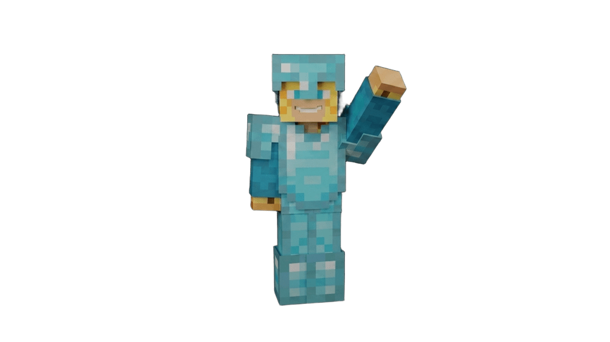

Survival Single Player · Minecraft 1.20
Un mundo
para toda
la vida
Vanilla, sin mods y en solitario. Aquí queda registrado todo lo que construyo: Cada proyecto, cada granja y los texture packs que uso en la serie.

AExplora

BPreguntas frecuentes
¿Has abandonado la serie?
No. Esta serie requiere tiempo y es normal que el ritmo no sea constante.
¿En qué versión de Minecraft juegas?
Actualmente estoy en la versión 1.20.
¿Usas mods en la serie?
En esta serie no uso mods, aunque los he usado anteriormente.
¿Por qué no usas mods?
Principalmente por dos motivos:
- Porque me gusta jugar a Minecraft lo más vanilla posible.
- Por fallos, bugs, corrupción de mundos, etc.
En resumen: si quiero un mundo para toda la vida, busco la forma más segura y la que más me gusta.